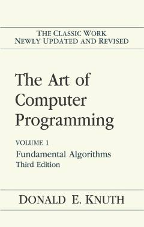

TADasturlash va algoritmlar nazariyasining klassik fundamental qo'llanmasi.
Ushbu kitob kompyuter dasturlash fanining fundamental asoslari va algoritmlar nazariyasiga bag'ishlangan mashhur ko'p jildli asarning birinchi qismidir. Donald Knut tomonidan yozilgan ushbu qo'llanma dasturchilar va soha mutaxassislari uchun muhim nazariy hamda amaliy bilimlarni o'z ichiga oladi.